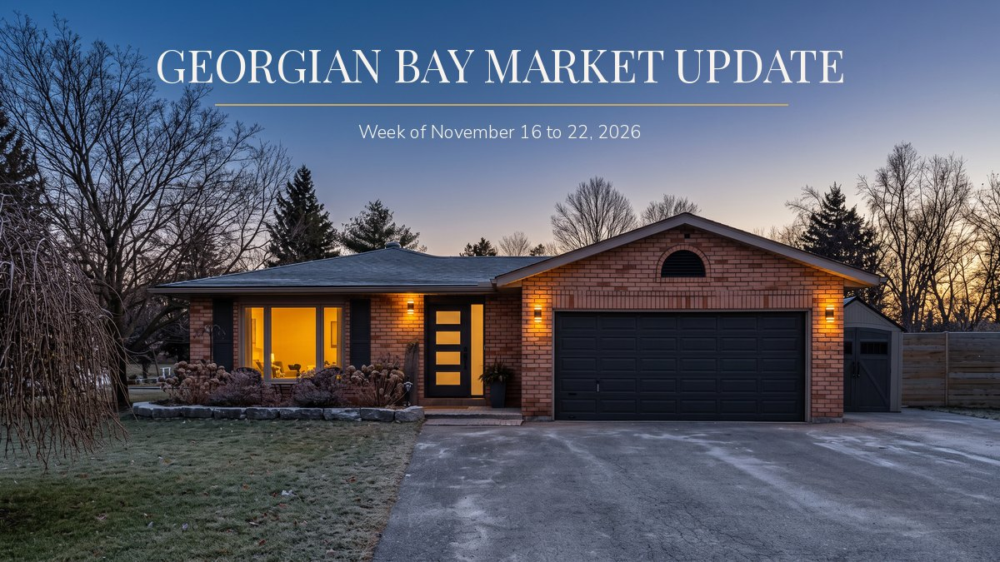

Market update · Week of November 16 to 22, 2026
New Listings Jumped 12.8%. What That Means for Midland Sellers
Thinking of selling? Get Your Personalized Home Value Report
Market update · Week of November 16 to 22, 2026
The number most people will stop at this week is a good one: more homes sold. Across Simcoe County, 112 homes sold between November 16 and 22, up from 108 the week before. The number that matters more if you're selling is on the other side of the ledger: 378 new listings, up 12.8%.
Key takeaways
Sales rose by four homes this week. New listings rose by 43. That gap is the whole story. The sales-to-new-listings ratio slipped to 30%, down 2 points, which means roughly three homes sold for every ten that came on the market.
When fresh supply arrives faster than buyers absorb it, months of inventory climbs. It went to 8.8 from 8.3, the highest reading since the week of October 19. Anything above six months is a buyer's market, and this week buyers gained a little more ground.
Here's the part that looks like a contradiction. Active listings fell by 54 to 4,631, so there are fewer homes for sale in total than a week ago. Listings that expire or get pulled for the winter are leaving the market.
At the same time, the homes that are new to the market are the ones a buyer looks at first. A seller listing this week is not competing with all 4,631 homes. They are competing with the 378 that just came on, and that group got bigger.
The average sale price was $716,441, up 1.7% from $704,271. Don't read much into it. The average moves with whichever homes happen to sell that week, so it doesn't tell you what's happening to prices.
The number I track is the list-to-sale ratio. It was 95% this week, and it has been sliding since September. Buyers paid 96.8% of asking across September and 96.4% across October. It has sat at 95% for four straight weeks now. That drop shows sellers are willing to give bigger discounts to get the job done. On a $700,000 home, each point is about $7,000.
Over the next few weeks it will show whether sellers fold further to get a deal done before Christmas. Days on market eased to 56 from 57, after peaking at 60 the week of November 2.
Statistics Canada reported on November 16 that inflation held at 3.1% in October, the same as September. The Bank of Canada raised its policy rate to 2.50% on October 28 and makes its next decision on December 9. BMO's Benjamin Reitzes told the Canadian Press that nothing in the numbers “really screams rate hike.”
For Simcoe County buyers, that matters more than the headline. Variable rates already rose after the October hike. If the Bank holds in December, buyers waiting on the sidelines get a little more certainty heading into the new year. If it hikes again, the people with a pre-approval and a rate hold in hand are the ones protected.
The market has been slow, and buyers are pulling back a little. We had a mild first three weeks of November, and that helped.
I've been on a lot of listing appointments over the last two weeks, and they tell me something the weekly numbers don't show yet. There are even more sellers who want to sell but are sitting on the sidelines, because prices are declining slowly and they're hoping to wait it out.
Expect a large drop in listings after November 30. It's one of the biggest expiry dates of the year, so a lot of homes that didn't sell this fall will come off the market at once. When that happens, active listings will fall, but those sellers haven't gone away.
I don't see the market improving between now and spring. When those sidelined sellers do list, they become your competition. If you're ready to move, waiting could cost you thousands.
Selling: Your competition grew this week. Price against the homes that just listed near you, not only the ones that sold last spring, because that's the list a buyer is scrolling. Homes are still selling at 95% of asking when the price is right. If you want to see what's listed and sold on your street in Midland, Penetanguishene, Tiny, Tay or Wasaga Beach, I'm glad to pull it.
Buying: You have 4,631 homes to choose from and 378 new ones this week alone. Sellers listing in late November usually have a real reason to move, which gives you room on price, conditions and closing dates. Get your pre-approval and rate hold done before December 9.
| Metric | This week | Change |
|---|---|---|
| Sales | 112 | up 3.7% |
| Average Sale Price | $716,441 | up 1.7% |
| New Listings | 378 | up 12.8% |
| Active Listings | 4,631 | down 54 |
| Sales to New Listing Ratio | 30% | down 2 points |
| Months of Inventory | 8.8 | up 0.5 |
| Days on Market | 56 | down 1 day |
| List to Sale Price Ratio | 95% | no change |

Yes. Simcoe County, which includes Midland, Penetanguishene, Tiny, Tay and Wasaga Beach, had 8.8 months of inventory for the week of November 16 to 22, 2026, up from 8.3 the week before. Anything above six months is a buyer's market. It rose because 378 new listings came on, up 12.8%, while sales rose only 3.7%.
If you're ready to move, listing now usually makes more sense in Midland and across Simcoe County. New listings jumped 12.8% the week of November 16 to 22, 2026, so competition is already building, and Oxford Economics expects Canada's resale market to stay quiet through the winter. From the listing appointments I've been on, more sellers are waiting on the sidelines, and I don't see the market improving before spring. Waiting could cost you thousands.
Slowly, though not this week. The Simcoe County average sale price was $716,441 for November 16 to 22, 2026, up 1.7% on the week, and homes sold at 95% of asking. Nationally, RBC economists found resales virtually unchanged in October. The weekly average moves with whichever homes sell, so watch the list-to-sale ratio instead: it has slipped from 96.8% in September to 95% now, which shows sellers are accepting bigger discounts to get deals done.
Yes. Homes across Simcoe County, including Midland, Penetanguishene and Wasaga Beach, sold at 95% of asking the week of November 16 to 22, 2026, down from 96.8% across September and 96.4% across October. It has held at 95% for four straight weeks. On a $700,000 home, each point is about $7,000, so sellers are giving bigger discounts to get deals done before Christmas.
November 30 is one of the biggest listing expiry dates of the year. Many Midland, Wasaga Beach and Simcoe County homes that didn't sell this fall will come off the market at once, so active listings will fall in early December. That doesn't mean demand improved. Most of those sellers still want to sell and are waiting on the sidelines for spring.
It isn't settled. Inflation held at 3.1% in October, and economists are split on whether the Bank follows its October 28 hike with another on December 9. For buyers in Midland, Wasaga Beach and the rest of Simcoe County, the practical answer is the same either way: get pre-approved with a rate hold before the decision. Variable rates already rose after the October hike, while fixed rates barely moved in November.
For buyers who are ready, yes. Simcoe County had 4,631 active listings and 378 new ones the week of November 16 to 22, 2026, with homes selling at about 95% of asking. Sellers listing in late November usually have a real reason to move, which makes them easier to negotiate with in Midland, Penetanguishene and Wasaga Beach.
If a move in Midland, Penetanguishene, Tiny, Tay or Wasaga Beach is on your mind, send me a message and we will work from the homes that actually closed near you. If you want a current read on your own property, a free, no-obligation valuation is the fastest start.
All answers are current as of November 2026.
Weekly market hub: every Wednesday’s Georgian Bay numbers in one place.
Not intended to solicit buyers or sellers currently under contract with a brokerage.
Jonathan Wallace, REALTOR® | Faris Team Real Estate Brokerage
Text “Home” to 705-433-2525 to start the conversation.